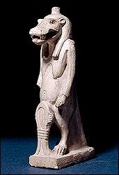

|
How did people worship the gods and goddesses?
The ancient Egyptians thought that it was very important to please the gods and goddesses. For that reason, worshipping the deities was a large part of life in ancient Egypt. Some gods and goddesses were worshipped by the pharaoh and priests in large temples. These were the 'official' gods and goddesses of the state, like Amun, Horus and Bastet.  Other gods and goddesses were worshipped by ordinary people in their homes. These were the gods and goddesses like Bes and Tawaret who protected people from the dangers of daily life, like scorpion bites, crocodile attacks and childbirth. |